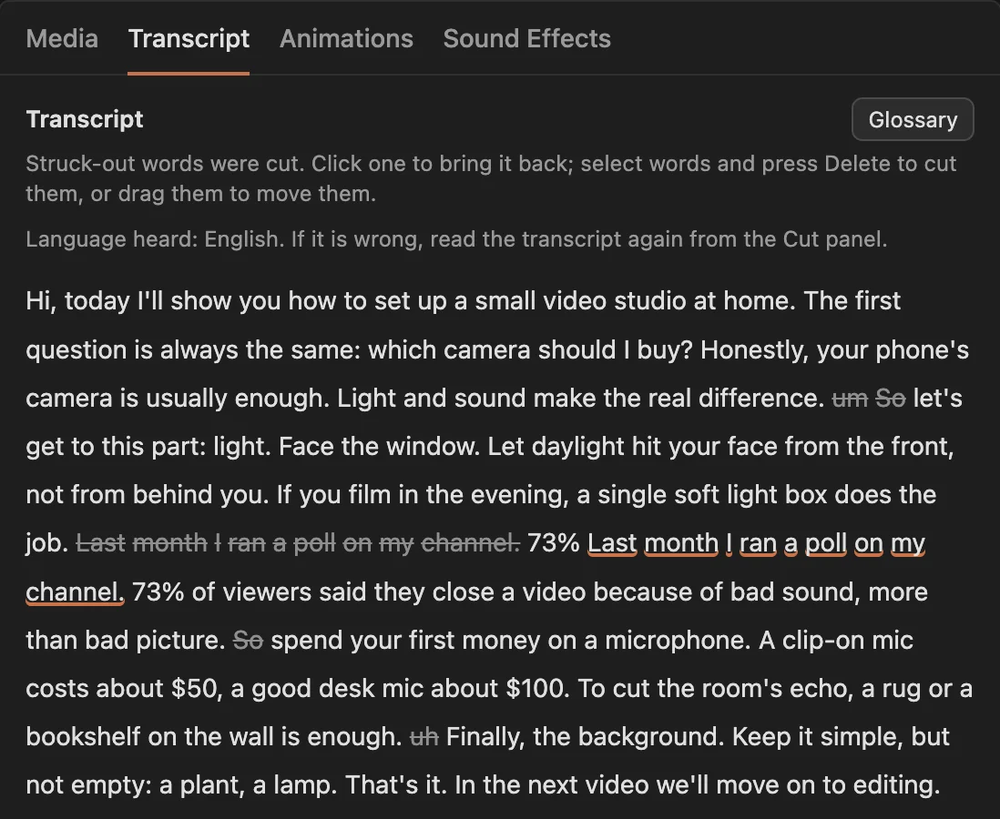

Transcript
The Transcript tab is your recording as text. What you delete here is cut from the video; what you bring back returns.

Cut and bring back
- Cut: select one or more words and press Delete. They stay in the text, struck out, and the video jumps over them.
- Bring back: click a struck-out word.
- Move: drag selected words to another place to change the order of what you say. Back to Recording Order on the timeline undoes the moves.
The transcript appears once the recording is transcribed in the Cut tab. If only part of it was read, Transcribe the Rest reads the remainder.
Why a word was cut
Hold the pointer over a struck-out word to see why it went: Pause, Filler word, Retake, False start, Off topic or Cut by you. Words underlined in orange are the ones the model was not sure of: decide them in step 4 of the Cut tab.
The right-click menu
Select words and right-click them:
- Cut: the same as Delete.
- Mark In and Out to Selection: sets In and Out around the words, for an animation, a caption range or an export of that part.
- Correct Words…: fix a word that was heard wrong. The text changes, the sound stays. Tick Add to glossary and the name is spelled right in captions, translations and the publishing texts. Bring Back Heard Words undoes it.
- Say Again in Voice…: type what you should have said, and it is read again in your own voice (needs an ElevenLabs key).
Glossary, at the top of the tab, keeps names and brands spelled exactly as you write them.
Find a word
Press ⌘ F (Ctrl F on Windows and Linux) for Find in the transcript. Previous and Next step through the matches.
Similar passages
In the Cut tab, Find Similar Passages asks your AI model for the places where you make the same point twice. They are marked in colour in the transcript; listen and cut the one you do not need. Nothing is cut by itself.
Language
Under the title, Language heard names the language the speech was read in. If it is wrong, read the transcript again from the Cut tab.